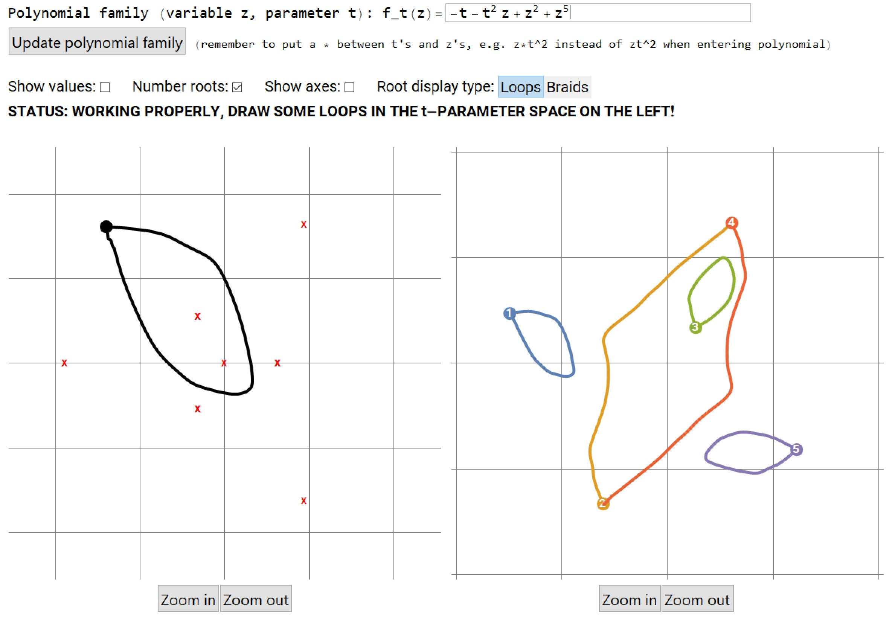

Root Loops

(screenshot)
Description
Root Loops is a Mathematica script which dynamically computes and draws the roots of a polynomial in one variable over the complex numbers as its coefficients change in a one parameter family. In the screenshot above, the loop in the coefficient parameter space has been drawn on the left by the user, and the loops on the right are the paths followed by the roots as the coefficients vary, computed automatically by the program. Root Loops can be used to teach and explore concepts such as: permutations, the fundamental theorem of algebra, the topology of covering spaces, Galois theory, and braid monodromy.
Notebook downloads
Below you will find two versions of the Root Loops notebook for Mathematica. The first download is the full Mathematica notebook, with source code. The second download is a modified version, compiled to CDF, which can be run in the free Wolfram CDF player. Unfortunately, due to limitations in the free player, the polynomial family in the second version cannot be entered using a text input field; instead, there is an ad hoc toggle input which unfortunately limits the number of polynomials that can be entered. If you are experienced with dynamic modules in Mathematica and have a good idea for another way to input polynomials that would allow more flexiblility but still run in the CDF player, please let me know!
Talks
I sometimes give talks using Root Loops to high school students, undergraduates, or graduate students (if you were a graduate student at UChicago during a certain era, you might know Root Loops better by the pseudonym Pizzatron, in which case you might think of the current version as Pizzatron 2000: Liquid Metal). If you're interested in arranging such a talk, get in touch (contact info below)! In the supplemental materials section below you can find worksheets/notes from some of these talks.
Use
You are free to use or modify the Root Loops program for your own purposes. If you do something cool with it, let me know (contact info below)!
Supplemental materials
- Berkeley Math Circle, 2018-09-05. Download.
Contact info
With questions or comments, you can reach me at s-e-a-n-p-k-h at GEE mail dot com [remove the hyphens.]